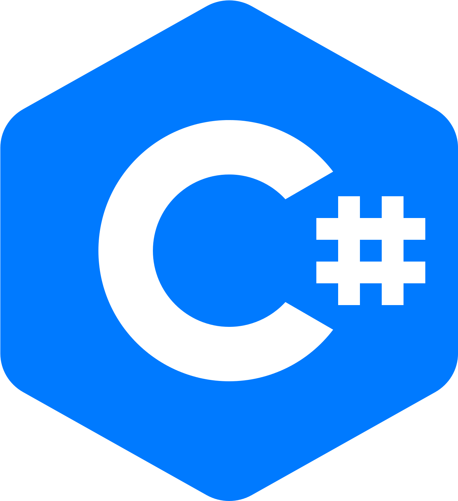
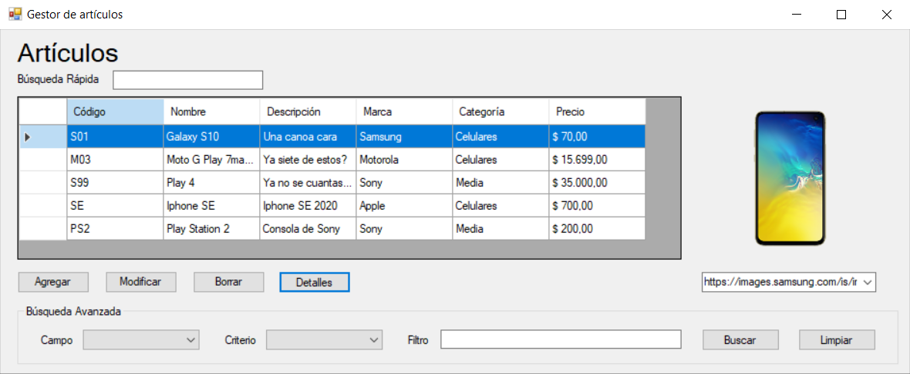

Vivo en la provincia de Córdoba, soy estudiante de programación y me interesa trabajar con diversas tecnologías tales como C#, .NET, SQL..
Soy estudiante autodidacta de programación desde abril de 2022. He completado algunos cursos como:
"Fundamentos de la Programación Nivel Universidad", "Programación con C# Nivel 1",
"Programación con C# Nivel 2: POO + .NET + SQL" y me encuentro cursando "Programación con C# Nivel 3: Web ASP .NET"
(todos dictados por el Lic. Maximiliano Sar Fernández en maxiprograma.com).
Me considero una persona seria, responsable y trabajadora con una gran voluntad por aprender y progresar.
Estas son algunas de las tecnologías de las que tengo conocimientos.


Este proyecto fue realizado para el curso "Programación con C# Nivel 2". Las herramientas utilizadas fueron GitHub, .NET, ADO .Net, C# y SQL Server. Esta aplicación agrega, modifica y elimina artículos, así como las categorías y marcas correspondientes. Además permite filtrar búsqueda y cargar imagen localmente o con url.
VerMi perfil de GitHub el cual actualizo periódicamente con repositorios de mis proyectos a medida que los desarrollo.
Ver